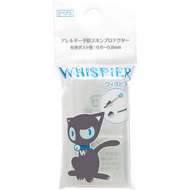
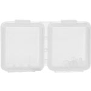

返回列表
产品名称：ウィスピア アレルギー予防スキンプロテクター

ワンダーワークス ウィスピア アレルギー予防スキンプロテクター ２ペア
メーカー ワンダーワークス
JANコード 4521947000886
商品の特徴
金属アレルギーの為、あきらめていたお気に入りのピアスも着けられるようになります。ピアスの金属の部分が皮膚に触れないので安心です。パイプ状なので市販のどんな素材のストレートピアスでも着けられます。
成分・分量
医療用樹脂
用法及び用量
お手持ちのピアスのポストに装着してご使用ください。(金属アレルギー予防のため)